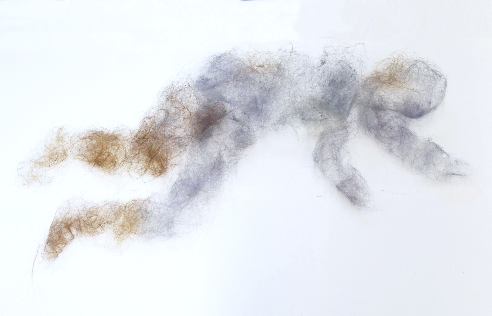
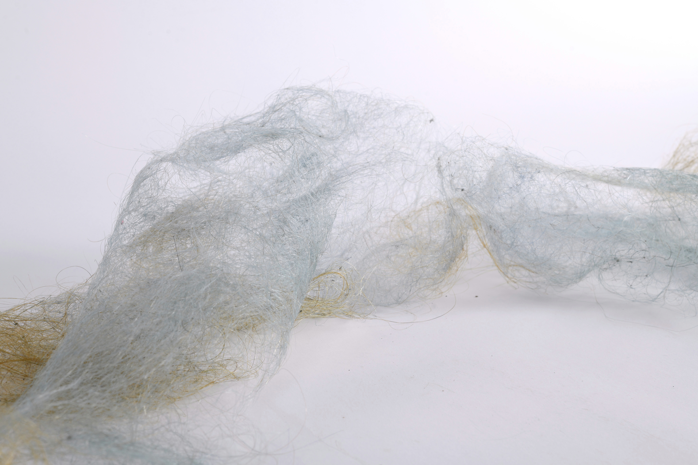
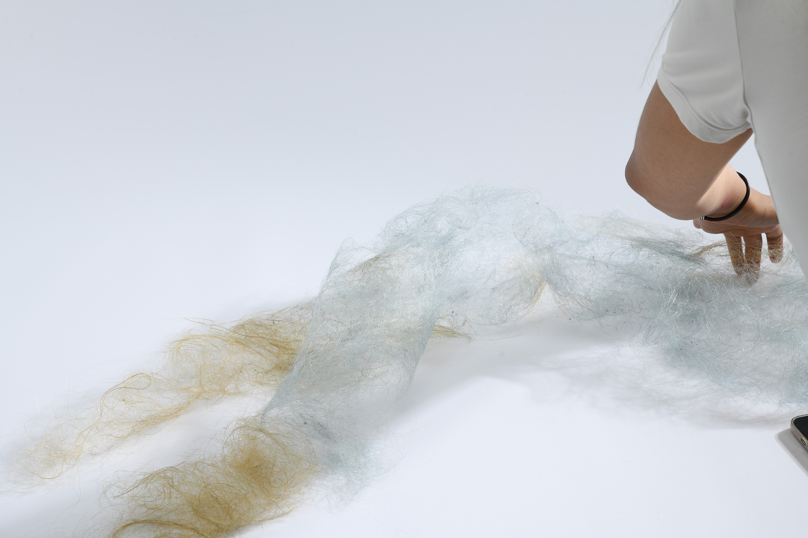
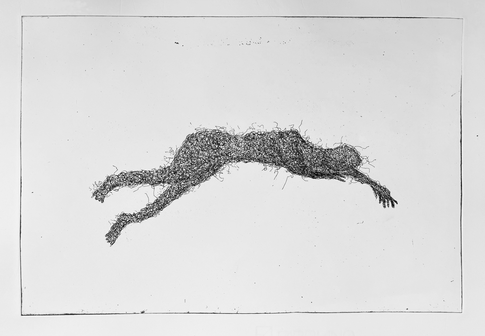

Entangled Body
Entangled Body explores the body as something porous, fragmented and continually entangled with the materials that surround it. Hair becomes a central material within the project, carrying both physical and psychological traces of the body. Once detached, it exists between presence and absence, intimacy and distance, belonging and estrangement. Through printmaking and sculpture, the works transform hair and bodily forms into ambiguous, intertwined structures. The project considers how traces of the body can retain a sense of identity while also becoming unfamiliar, and asks how material can hold experiences of intimacy, vulnerability and transformation.





Etching, Size 35x50cm.
2024

drypoint, Size 35x50cm.
2024
Artwork Information
Entangled Body,2024
Etching
Edition of 12
Quiver, 2024
Drypoint
Edition of 1